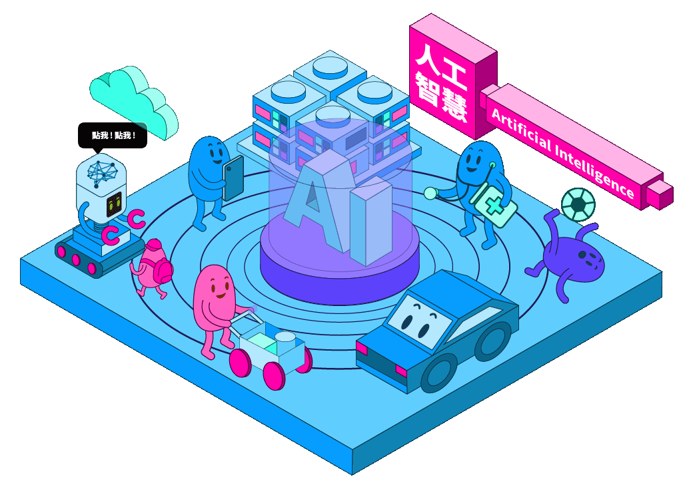

恭喜您完成AI 人工智慧

恭喜您完成 AI 人工智慧
已經完成第 1 / 6 區
請至少再完成 2 個區域
※ 點選圖片中的場景，會有意想不到的效果哦
人工智慧可以定義為模仿人類與人類思維相關的認知功能的機器或計算機，如學習和解決問題。人工智慧是計算機科學的一個分支，它感知其環境並採取行動，最大限度地提高其成功機會。此外，人工智慧能夠從過去的經驗中學習，做出合理的決策，並快速回應。因此，人工智慧研究人員的科學目標是透過構建具有象徵意義的推理或推理的計算機程式來理解智慧。
※ 本轉載之影片內容均用於非商業用途。純粹為教育、非營利等合法目的，而影片之之著作權、所有權與智慧財產權，包括內容、文字、圖片、聲音、影像等均為台灣金融研訓院所有。
數位科技如AI、區塊鍊及雲計算等快速發展，改變了人們的生活模式，導致未來生活必須與數位科技深度融合。
書香文化教育基金會(以下簡稱本會)成立以來，一直以提昇教育水準與閱讀素養為宗旨，為配合數位科技的發展趨勢，特規劃「六大科技領域閱讀心得徵文活動」，希望透過科技閱讀，使高中職生與大專學生能對新興科技有基本的認識與瞭解，開啟學子們對數位科技的興趣，促使年輕一代對未來有更多想像，能善用數位科技，以創造更美好的生活。
AI 可用來擷取賽事現場的影像，並提供報告給教練，建議如何更理想地規劃比賽，包括配置最佳的場上位置與策略。
AI 能透過影像辨識技術，增強車輛辨識、號誌管理、交通安全管理等資訊整合。目前，台灣交通的人工智慧應用，已發展到自駕車、車流計算、路況安全預警、路網優化等領域。
AI 應用程式可提供個人化的醫療和 X 光判讀。個人健康照護助理可以扮演人生教練的角色，提醒您服藥、運動或吃得更健康。
零售業： AI 提供虛擬購物的功能，可給予個人化的建議，並且和消費者討論購買選項。庫存管理和站點配置技術，也可透過 AI 改善。 製造業： AI 可以分析從互聯設備串流傳來的工廠物聯網資料，運用循環式網路來預測預期的負載和需求；循環式網路是一種特定的深度學習網路，搭配序列資料使用。
生活中，常見智慧音箱及手機AI助理運用的語音辨識功能；Netflix、YouTube為你推薦的影音演算法；AI客服辨識客戶想法，提出個人化回覆⋯⋯AI人工智慧應用早已無所不在，持續為你改善生活品質。